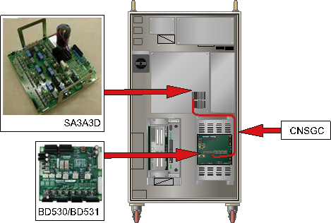

Previous error code: E0034 AMP over-current error
1.1.59.1. Outline
The protection fuse is disconnected because over current flew through the surge protector when the over or surge voltage flew into the 3-phase voltage(R, S, and T) to servo drive unit.
1.1.59.2. Causes and examine methods
|
F1 or F2 disconnected due to voltage surge into the servo AMP.
(1) Pease examine the fuse in the Servo Drive Unit. n Please examine if the servo drive unit¡¯s fuse has been cut-off.
<Case: Fuse has been cut-off> (2) Check the controller power voltage. n Please examine the 3-phase voltage from the inside of controller. n Please examine the controller¡¯s 3-phase input voltage. (3) Please examine the components that are related to the power. n Please replace servo drive unit and examine it.
< Case: Fuse has not been cut-off > : E02511 AMP AC input voltage is high – abnormality with the detection path |
(1) Pease examine the fuse in the Servo Drive Unit.
Occurrence of AMP over-current error is detected by a diode module when the input 3-phase voltage exceeds the specification. Generated error will be handled by the BD530/BD531 through a CNSGC cable.
(a) Hi5a-S00 controller

(b) Hi5a-S30 controller

(c) Hi5a-N00 controller

(d) Hi5a-N30 controller
Figure 1.168 Arranging the parts related to the AMP overcurrent error

(a) Hi5a-S00 controller (SD3X3Y)

(b) Hi5a-S30 controller (SD3A3D)

(c) Hi5a-N00 controller (SD1L2C)

(d) Hi5a-N30 controller (SA3A3D)
Figure 1.169 Position of the AMP overcurrent detection fuse

Figure 1.170 Appearance of Disconnected AMP Over-Current Detection Fuse
(2) Check the controller power voltage.
The overcurrent error occurs when overcurrent or surge voltage that exceeds the three-phase AC242V is inputted into the servo drive unit.
High input voltage flows through the surge protector, causing the fuse in the serial connection to be disconnected, generating the error.
When the measured input voltage exceeds the allowable range, check the voltage according to the controller input voltage checking procedure and the controller internal three-phase voltage checking procedure.
¨ª Servo Drive Unit input voltage specification: 3-phase AC 220V
¨ª Allowed range when motor turns on: 198V ~ 242V
(3) Please examine the components that are related to the power.
The overcurrent error occurs when overcurrent or surge voltage that exceeds the three-phase AC242V is inputted into the servo drive unit. High input voltage flows through the surge protector, causing the fuse in the serial connection to be disconnected, generating the error.
n Replacement and inspection of servo drive unit
Replace the AMP overcurrent error detection module and then check if the error occurs again. An error may occur continuously due to a module¡¯s internal circuit malfunction.
¨ª Hi5a-S controller
l Medium size Robot¡¯s Servo Drive Unit: SD3X3Y
l Small size Robot¡¯s Servo Drive Unit: SD3A3D
¨ª Hi5a-N controller
l Medium size Robot¡¯s diode module : SD1L2C
l Small size Robot¡¯s Servo Drive Unit : SA3A3D